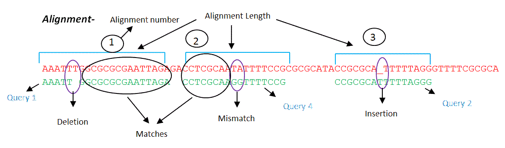

hlp.algo.seqalign.align
Align
Aligns query with reference genome.
Clicking the Align button will start computational alignment of the user’s selected sequence to that of the reference genome. The user must specify (using the adjacent drop-down menu) whether the alignment will be run using the HIVE Hexagon algorithm or the NCBI BLAST algorithm.
